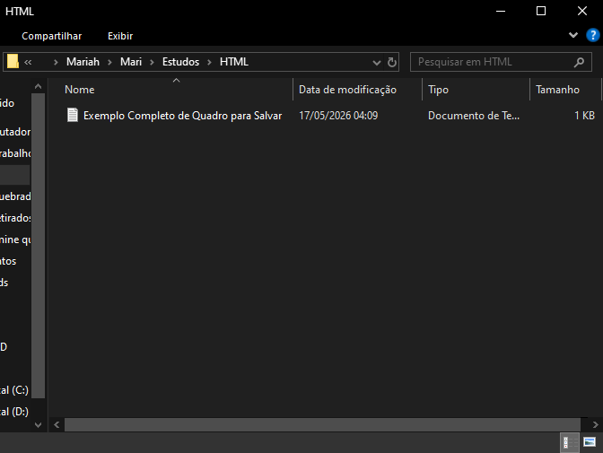

Este é o primeiro parágrafo criado direto no VS Code, com a tag de parágrafo.
Informar sempre o charset UTF-8, para que o site não fique com caracteres inválidos devido a acentos e simbolos do site.
Incluir sempre a linha de código que informa a largura e escala da página, para que a mesma se ajuste ao tamanho da tela utilizada.
Acessando o FreeCodeCamp eu descobri um ótimo site para estudar e estou aprendendo HTML, mas tem muitas outras linguagens de programação por lá.
Criei uma pasta para salvar meus arquivos .txt, imagens e outros que utilizarei na criação do site, vejam:

O único arquivo que tem é um Boilerplate que o Gemini me indicou para ajudar na criação desse aqui!
Finalizarei esse teste por aqui, espero que tenha gostado! Até mais 😊